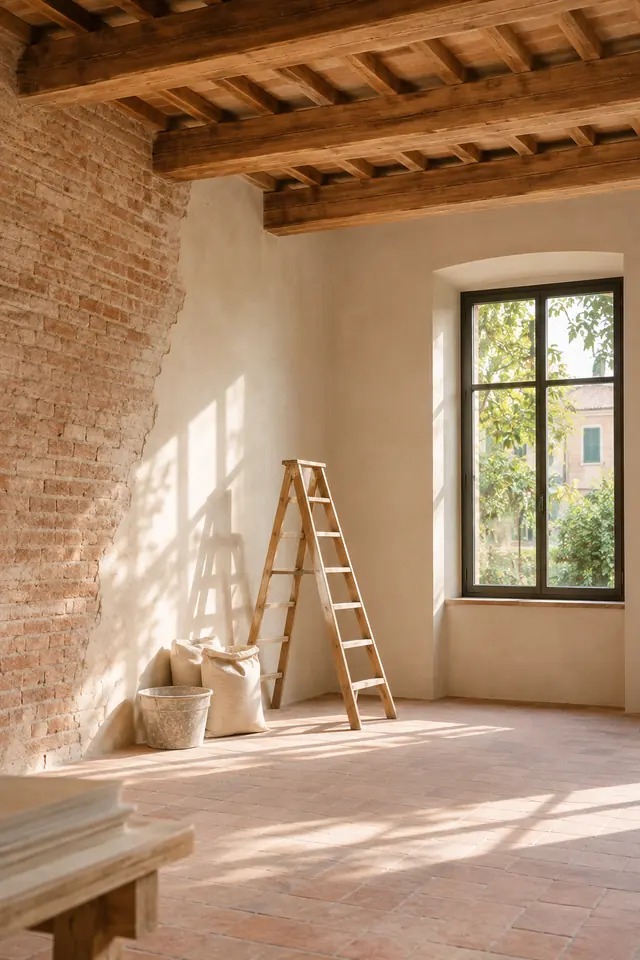
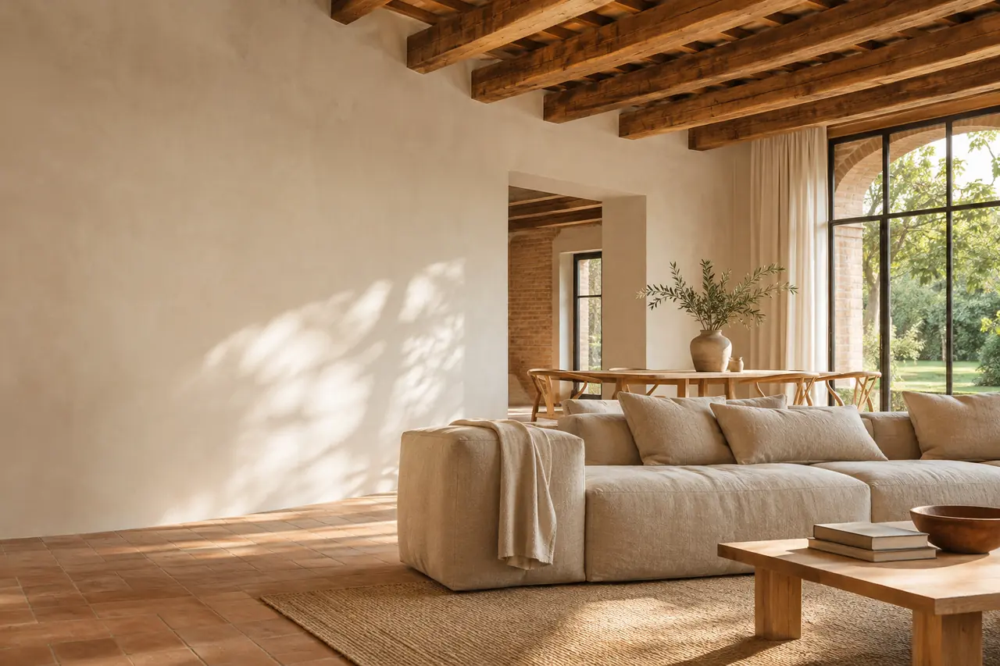
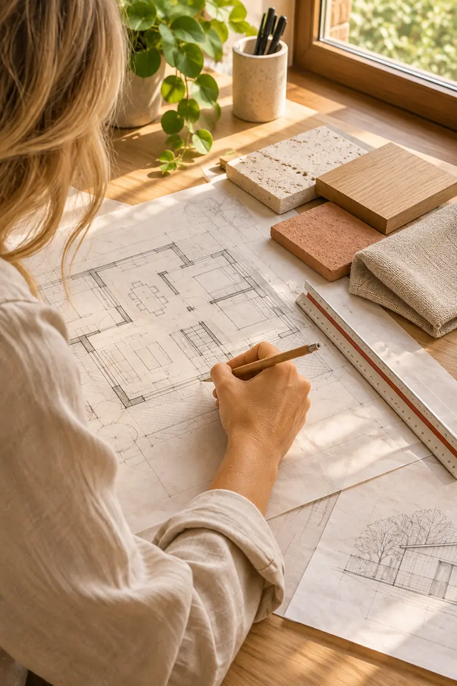
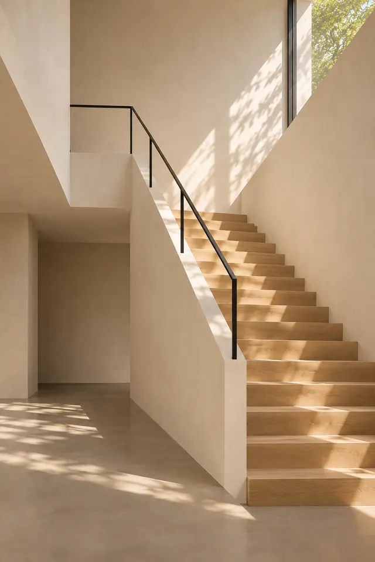
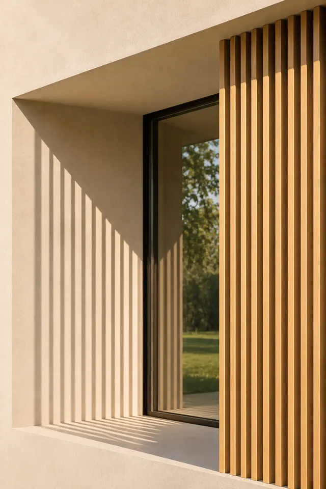
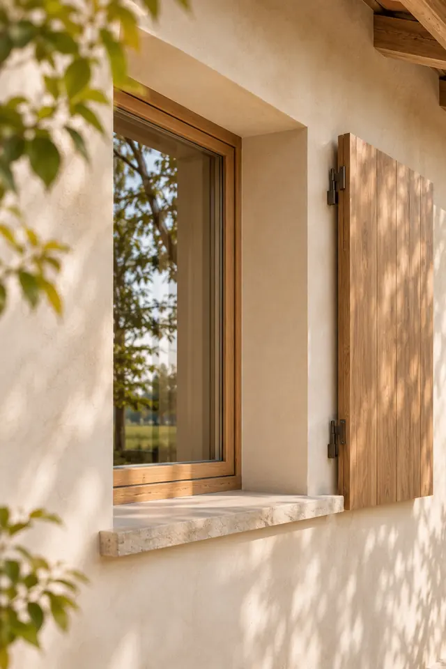

Ristrutturazioni
Appartamenti, case indipendenti ed edifici storici: progetto, pratiche e cantiere.

Sono Cristina Restani e progetto la tua casa: nuove costruzioni, ristrutturazioni, interni ed efficienza energetica, a Mantova e in provincia.
Progettazione architettonica personalizzata a Mantova e provincia. Realizzo ville, appartamenti e ristrutturazioni residenziali con un approccio che unisce funzionalità ed estetica.

Da oltre vent’anni progetto abitazioni private a Mantova e provincia. Trasformo le tue idee in spazi da vivere, cercando l’equilibrio tra design contemporaneo, soluzioni sostenibili e funzionalità.
Mi occupo di consulenze, progetti completi e direzione lavori. Le mie specializzazioni sono la bioedilizia, l’efficienza energetica e il recupero di edifici storici.
Contattami per una consulenza o un progetto su misura: insieme diamo valore alla tua casa e al tuo investimento.
Quattro modi di lavorare sulla casa, con lo stesso metodo e la stessa cura.

Appartamenti, case indipendenti ed edifici storici: progetto, pratiche e cantiere.

Interni completi, restyling e consulenze su colori, materiali e arredi.

Ville moderne, case unifamiliari e bifamiliari, dal lotto alle chiavi.

Meno consumi e più comfort, anche negli edifici storici.
Un percorso chiaro, in cui sai sempre a che punto siamo e cosa succede dopo.
Ci conosciamo, vedo la casa o il terreno e capisco cosa ti serve.
Disegni, rendering, materiali e una stima chiara dei costi.
Preparo le pratiche edilizie e ti aiuto a scegliere l’impresa.
Seguo i lavori come direttore dei lavori fino alla consegna.
Lo studio è a Borgo Virgilio, a pochi minuti da Mantova. Seguo progetti in città e nei comuni intorno.
Una telefonata, un messaggio o due righe nel modulo: il primo incontro conoscitivo è gratuito e senza impegno.
Oppure chiamami al 340 409 2130, lunedì–sabato, 8:30–18:30.